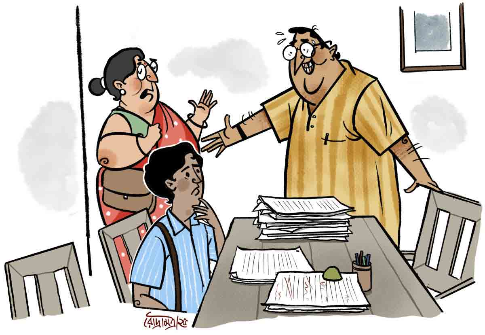

গুডউইল বনাম গরজ
অরুণোদয় ভট্টাচার্য
অতিরিক্ত পান-জর্দার কলাণে যমকালো দাঁত বার করে চোখ কুঁচকে হাসলেন নিবারণ পাল। ‘পালের হাওয়া’ প্রকাশনীর কর্ণধার, তথা মাঝি। মোটা নাকের পাটা ফুলিয়ে তৃষিতকে বললেন, “লেখা আপনার হাই-ফাই যাই হোক, আমার কাস্টমাররা ক’জন আপনার নাম জানে? কে চাইবে আপনার বই কিনতে, অ্যাঁ?”
মুখ কালো করে শুনল তৃষিত মজুমদার। স্কটিশের বাংলার সহকারী অধ্যাপক। আটাশ সবে পুরেছে। মনে অনিবার্য রোমান্টিকতা। ঘরে নতুন বৌ মৌমণি, ওরই প্রাক্তন ছাত্রী। নতুন পে-স্কেল জীবনযাত্রায় অনেকটা সচ্ছলতা এনেছে। তবু মন খারাপ তৃষিতের। তার তৃষ্ণা যে প্রতিষ্ঠিত সাহিত্যিক হওয়ার! নিজের নামকে কোটি কোটি স্বদেশি ও লক্ষাধিক প্রবাসী বাঙালি পাঠকের কাছে পরিচিত ও জনপ্রিয় করে তোলার।
বেজার মুখে সে গিলতে লাগল নিবারণের তেতো উপদেশ, “হ্যাঁ, হতেন আপনি দেবেশ গুঁই, কোয়েল রায়, প্রভাতপ্রসন্ন চট্টরাজ বা গুলমোহর গুপ্ত... মানে, যে সব রাইটারকে লোকে এক ডাকে চেনে...”
শুকনো হেসে তৃষিত পাদপূরণ করে দেয়, “তা হলে আপনিই আমার কাছে ছুটতেন, নট দি আদার ওয়ে রাউন্ড!”
“এগজ়্যাক্টলি স্যর! বাজারে সবচেয়ে ইম্পর্ট্যান্ট হল গুডউইল। কোয়েল, গুলমোহর, এদের বই বাজারে কপাকপ খায়। কলেজ স্ট্রিট বলুন, বুক ফেয়ার বলুন, লাইব্রেরি, তার পর গিয়ে বাংলাদেশ বা ক্যালিফোর্নিয়া বলুন! এভরিহোয়্যার! সারা বছর বাঙালিরা কিনে যাচ্ছে।… এই গুডউইলটা এক দিনে হয় না। তৈরি করতে হয় বহু চেষ্টা করে!”
“বুঝেছি। আর এক বার গুডউইল হয়ে গেলে তিনি ‘সেলেব’ হয়ে যান ফরএভার! ছাই-পাঁশ কিছু লিখে ফেললেও দিব্যি তরতরিয়ে চলে যায়! গুডউইল হল আপনার পালের হাওয়া!”
“অ্যায়! এই হল গিয়ে লাখ কথার এক কথা!”
“আচ্ছা, দেবেশ-কোয়েল নয় বুঝলাম, কিন্তু আপনি মণীশ নাথ আর কবরী মুখার্জির বই অত সাড়ম্বরে প্রকাশ করলেন কেন?”
“বুঝলেন না অত সহজ হিসাবটা? আরে মশাই, আপনাদের প্রফেসারি লাইনেই তো দেখছেন, ইংরিজির লোক বাংলা সাহিত্যে খেজুর গাছ নিয়ে ডক্টরেট করছে, একেবারে মাতৃভাষায়! আবার বাংলার লোক পিএইচ ডি পাচ্ছে ইতিহাসে নেতাজির গুরুত্ব নিয়ে গবেষণা করে। ভূগোলের এক প্রফেসরের থিসিস, এই দেখুন, আমরাই ছেপেছি, ‘বাংলা গ্রুপ থিয়েটারে জোয়ার ভাটা’।”
“এ থেকে আপনি কী বোঝাতে চাইছেন নিবারণবাবু?” বিরক্তি চেপে শুধোল তৃষিত।
যমকালো দাঁত বিকশিত করে সাগ্রহে নিবারণ বললেন, “এটা হল ট্রান্সফার অব গুডউইল। মানে যে কোনও স্ট্রিমে, যে কোনও ভাষায় পিএইচ ডি ম্যানেজ করতে পারলেই হল। নামের আগে ডক্টর টাইটল ইউজ় করতে পারলেই একেবারে কেল্লা ফতে। সম্মান, উন্নতি, ইনক্রিমেন্ট কিস্যু আটকাবে না। কেমন, তাই কি না?”
নীরবে মাথা নেড়ে সায় দিতে হল তৃষিতকে। নিবারণ বলে চললেন, “এ বার দেখুন, মণীশ নাথ মস্ত দেশনেতা; একেবারে প্রথম সারির পলিটিশিয়ান। তাঁর আত্মজীবনী ‘জন্মেছি এই দেশে’ এক মাসের মধ্যে দশ হাজার কপি সোল্ড আউট। আর টিভি সিরিয়ালের এক নম্বর নায়িকা কবরী মুখার্জির ফ্যান লাখো লাখো— হয়তো আপনি নিজেও। এদের এক ফিল্ডে সেলিব্রিটি হওয়ার জন্য বইয়ের ফিল্ডেও ক্লিন সুইপ হয়ে যায়। নামের গুডউইলটাই বিজ্ঞাপন।”
“বাঃ নিবারণবাবু, খুব সুন্দর করে বুঝিয়ে দিলেন তো ব্যাপারটা! আমার মনে হয় আপনি অধ্যাপক হিসেবেও সাফল্য পেতেন!”
“সে আপনি যতই গ্যাস দিন স্যর, এখনকার জেনারেশনের মতিগতি মোটেই সুবিধেজনক মনে হয় না আমার। ভাল কথা বললে বলে, জ্ঞান দেবেন না। আপনারা যে কী করে সামলান!”
“যা বলেছেন! এরা আবার বই-টই পড়তেই চায় না। স্মার্টফোনে গুগল ইনস্টাগ্রাম ইউটিউব ওটিটি আর ওয়টস্যাপে বুঁদ হয়ে থাকে!”
“ওফফ!” শিউরে উঠে নিবারণ বললেন, “এক সাংঘাতিক সময় তৈরি করেছে এই মোবাইল-ল্যাপটপ! আমাদের বই-প্রকাশকদের ভবিষ্যৎ অন্ধকার এর জ্বালায়! নিন, চা খান!”
চায়ের দোকানের এক পুঁচকে ছেলে তার নিজের আকৃতির সঙ্গে মানানসই একটা ভাঁড় তৃষিতের সামনে বসিয়ে গিয়েছিল। তাতে মুখ দেওয়ার কোনও তাগিদই অনুভব করল না সে। কাজের কথায় ফিরল।
“তা হলে, নিবারণবাবু, আমার মতো অনামী গুডউইলহীন লেখকের পাণ্ডুলিপি আপনার পালের হাওয়া ছাপতে অপারগ, তাই তো?”
“দেখুন, অনামী লেখককে আমি আমার কোম্পানির গুডউইল দিতে পারি একটি মাত্র শর্তে। তা হল মাছের তেলে মাছ ভাজার শর্ত। সব কস্ট আপনাকেই দিতে হবে, আমি কোনও আর্থিক ঝুঁকি নিতে পারব না। আপনার তিনশো পাতার উপন্যাস পাঁচশো কপি ছাপলে ধরুন হাজার পঞ্চাশ পড়ে যাবে। এখনি যদি হাফ পেমেন্ট করেন, ছাপা শুরু হয়ে যাবে। এক মাসের মধ্যে কিন্তু সমস্তটা দিতে হবে, সে জন্যে আজকাল অনেক জায়গায় রেডি লোন পাওয়া যায়।”
হতাশাক্লিষ্ট তৃষিত এ বার ঠান্ডা চা-টাই এক চুমুকে শেষ করল। মাথায় তার এলোমেলো অনেক ভাবনা ঘুরপাক খেল… ইশ! সে যদি কোনও ভাবে গুডউইলটা করে রাখতে পারত! পিএফ থেকে হাউস রিপেয়ারিং-এর অজুহাতে অবশ্য তোলা সম্ভব… তা হলে পঞ্চাশই তুলবে, না আশি?... মৌমণি শিলং যাওয়ার আবদার জানিয়ে রেখেছে…
হঠাৎ এক মধ্যবয়স্কা মহিলার আবির্ভাব ঘটল প্রকাশকের অফিস-ঘরে। তাঁকে দেখেই নিবারণ পাল শশব্যস্ত হয়ে উঠে দাঁড়িয়ে সাড়ম্বর অভ্যর্থনা জানালেন।
“আসুন, আসুন, ম্যাডাম! বসুন প্লিজ়!” হাত দিয়ে তৃষিতের পাশের চেয়ারের প্রতি ইঙ্গিত করলেন। তৃষিতের মনে হল, উনি বসার আগে পালমশাই সিটটা নিজের কোঁচা দিয়ে মুছে দেবেন! সেটা অবশ্য আর করলেন না। বিগলিত ভঙ্গিতে একটু দাঁড়িয়ে ‘রমণী’য় উপবেশন প্রক্রিয়া দেখে নিজের আসনে ফিরলেন।
বিপুল স্ট্রাকচার নিয়ে তৃষিতকে দেওয়ালের দিকে খানিকটা পিষে দিয়ে ঝান্টুস মহিলা চেয়ারে আসীন হলেন। ওর দিকে এক বার চেয়েও দেখলেন না। খ্যানখেনে গলায় ঘোষণা করলেন, “নিয়ে এলাম আমার উপন্যাসের ম্যানুস্ক্রিপ্ট! আছে তিনশো পাতা, এটাকেই চারশো পাতার বই করতে হবে একটু বড় ফন্টে ছেপে। বায়োডাটা আর পাসপোর্ট সাইজ় কালার ফোটো এই খামের মধ্যে আছে...” বলতে বলতে নিবারণবাবুর হাতে খামটা ধরিয়ে দিলেন। আর, কাঁধের ব্যাগ থেকে জাবদা পাণ্ডুলিপি বার করে ধপাস করে সামনের টেবিলে রাখলেন।
অনিবার্য ভাবে চোখটা সে দিকে ঘুরল তৃষিতের। গোটা গোটা অক্ষরে ফাইলের উপর লেখা ‘নেশা লাগা নিশি’। তলায় লেখিকার নাম, দময়ন্তী গুছাইত।
নিবারণবাবুর কফি-শিঙাড়ার প্রস্তাব নাকচ করে দিয়ে পাঁচ মিনিটের মধ্যেই উঠে পড়লেন শ্রীমতী গুছাইত। যাওয়ার আগে বলে গেলেন, মহালয়ার আগেই যেন বড় বড় পত্রিকায় তাঁর নভেলের নজরকাড়া বিজ্ঞাপন বেরোয়।
“সে আপনি নিশ্চিন্ত থাকুন। সব ব্যবস্থা হয়ে যাবে!” বলতে বলতে দরজা পেরিয়ে সিঁড়ি পর্যন্ত সঙ্গে গিয়ে তাঁকে বিদায় করে এলেন নিবারণ।
ফিরে এসে চেয়ারে বসে পড়লেন ধুপুস করে। খানিকটা তুলসী চক্রবর্তীর মতো ভঙ্গিতে ‘ওফফ! উরি বাপ রে বাপ রে বাপ রে...’ বলে গ্লাসের ঢাকনা খুলে ঢকঢক করে খানিকটা জলও খেয়ে নিলেন।
তৃষিত তীক্ষ্ণ চোখে নিরীক্ষণ করে বলল, “আপনাকে একটু বিধ্বস্ত মনে হচ্ছে?”
অতিরিক্ত পান-জর্দার কলাণে যমকালো দাঁত বার করে চোখ কুঁচকে হাসলেন নিবারণ পাল। ‘পালের হাওয়া’ প্রকাশনীর কর্ণধার, তথা মাঝি। মোটা নাকের পাটা ফুলিয়ে তৃষিতকে বললেন, “লেখা আপনার হাই-ফাই যাই হোক, আমার কাস্টমাররা ক’জন আপনার নাম জানে? কে চাইবে আপনার বই কিনতে, অ্যাঁ?”
মুখ কালো করে শুনল তৃষিত মজুমদার। স্কটিশের বাংলার সহকারী অধ্যাপক। আটাশ সবে পুরেছে। মনে অনিবার্য রোমান্টিকতা। ঘরে নতুন বৌ মৌমণি, ওরই প্রাক্তন ছাত্রী। নতুন পে-স্কেল জীবনযাত্রায় অনেকটা সচ্ছলতা এনেছে। তবু মন খারাপ তৃষিতের। তার তৃষ্ণা যে প্রতিষ্ঠিত সাহিত্যিক হওয়ার! নিজের নামকে কোটি কোটি স্বদেশি ও লক্ষাধিক প্রবাসী বাঙালি পাঠকের কাছে পরিচিত ও জনপ্রিয় করে তোলার।
বেজার মুখে সে গিলতে লাগল নিবারণের তেতো উপদেশ, “হ্যাঁ, হতেন আপনি দেবেশ গুঁই, কোয়েল রায়, প্রভাতপ্রসন্ন চট্টরাজ বা গুলমোহর গুপ্ত... মানে, যে সব রাইটারকে লোকে এক ডাকে চেনে...”
শুকনো হেসে তৃষিত পাদপূরণ করে দেয়, “তা হলে আপনিই আমার কাছে ছুটতেন, নট দি আদার ওয়ে রাউন্ড!”
“এগজ়্যাক্টলি স্যর! বাজারে সবচেয়ে ইম্পর্ট্যান্ট হল গুডউইল। কোয়েল, গুলমোহর, এদের বই বাজারে কপাকপ খায়। কলেজ স্ট্রিট বলুন, বুক ফেয়ার বলুন, লাইব্রেরি, তার পর গিয়ে বাংলাদেশ বা ক্যালিফোর্নিয়া বলুন! এভরিহোয়্যার! সারা বছর বাঙালিরা কিনে যাচ্ছে।… এই গুডউইলটা এক দিনে হয় না। তৈরি করতে হয় বহু চেষ্টা করে!”
“বুঝেছি। আর এক বার গুডউইল হয়ে গেলে তিনি ‘সেলেব’ হয়ে যান ফরএভার! ছাই-পাঁশ কিছু লিখে ফেললেও দিব্যি তরতরিয়ে চলে যায়! গুডউইল হল আপনার পালের হাওয়া!”
“অ্যায়! এই হল গিয়ে লাখ কথার এক কথা!”
“আচ্ছা, দেবেশ-কোয়েল নয় বুঝলাম, কিন্তু আপনি মণীশ নাথ আর কবরী মুখার্জির বই অত সাড়ম্বরে প্রকাশ করলেন কেন?”
“বুঝলেন না অত সহজ হিসাবটা? আরে মশাই, আপনাদের প্রফেসারি লাইনেই তো দেখছেন, ইংরিজির লোক বাংলা সাহিত্যে খেজুর গাছ নিয়ে ডক্টরেট করছে, একেবারে মাতৃভাষায়! আবার বাংলার লোক পিএইচ ডি পাচ্ছে ইতিহাসে নেতাজির গুরুত্ব নিয়ে গবেষণা করে। ভূগোলের এক প্রফেসরের থিসিস, এই দেখুন, আমরাই ছেপেছি, ‘বাংলা গ্রুপ থিয়েটারে জোয়ার ভাটা’।”
“এ থেকে আপনি কী বোঝাতে চাইছেন নিবারণবাবু?” বিরক্তি চেপে শুধোল তৃষিত।
যমকালো দাঁত বিকশিত করে সাগ্রহে নিবারণ বললেন, “এটা হল ট্রান্সফার অব গুডউইল। মানে যে কোনও স্ট্রিমে, যে কোনও ভাষায় পিএইচ ডি ম্যানেজ করতে পারলেই হল। নামের আগে ডক্টর টাইটল ইউজ় করতে পারলেই একেবারে কেল্লা ফতে। সম্মান, উন্নতি, ইনক্রিমেন্ট কিস্যু আটকাবে না। কেমন, তাই কি না?”
নীরবে মাথা নেড়ে সায় দিতে হল তৃষিতকে। নিবারণ বলে চললেন, “এ বার দেখুন, মণীশ নাথ মস্ত দেশনেতা; একেবারে প্রথম সারির পলিটিশিয়ান। তাঁর আত্মজীবনী ‘জন্মেছি এই দেশে’ এক মাসের মধ্যে দশ হাজার কপি সোল্ড আউট। আর টিভি সিরিয়ালের এক নম্বর নায়িকা কবরী মুখার্জির ফ্যান লাখো লাখো— হয়তো আপনি নিজেও। এদের এক ফিল্ডে সেলিব্রিটি হওয়ার জন্য বইয়ের ফিল্ডেও ক্লিন সুইপ হয়ে যায়। নামের গুডউইলটাই বিজ্ঞাপন।”
“বাঃ নিবারণবাবু, খুব সুন্দর করে বুঝিয়ে দিলেন তো ব্যাপারটা! আমার মনে হয় আপনি অধ্যাপক হিসেবেও সাফল্য পেতেন!”
“সে আপনি যতই গ্যাস দিন স্যর, এখনকার জেনারেশনের মতিগতি মোটেই সুবিধেজনক মনে হয় না আমার। ভাল কথা বললে বলে, জ্ঞান দেবেন না। আপনারা যে কী করে সামলান!”
“যা বলেছেন! এরা আবার বই-টই পড়তেই চায় না। স্মার্টফোনে গুগল ইনস্টাগ্রাম ইউটিউব ওটিটি আর ওয়টস্যাপে বুঁদ হয়ে থাকে!”
“ওফফ!” শিউরে উঠে নিবারণ বললেন, “এক সাংঘাতিক সময় তৈরি করেছে এই মোবাইল-ল্যাপটপ! আমাদের বই-প্রকাশকদের ভবিষ্যৎ অন্ধকার এর জ্বালায়! নিন, চা খান!”
চায়ের দোকানের এক পুঁচকে ছেলে তার নিজের আকৃতির সঙ্গে মানানসই একটা ভাঁড় তৃষিতের সামনে বসিয়ে গিয়েছিল। তাতে মুখ দেওয়ার কোনও তাগিদই অনুভব করল না সে। কাজের কথায় ফিরল।
“তা হলে, নিবারণবাবু, আমার মতো অনামী গুডউইলহীন লেখকের পাণ্ডুলিপি আপনার পালের হাওয়া ছাপতে অপারগ, তাই তো?”
“দেখুন, অনামী লেখককে আমি আমার কোম্পানির গুডউইল দিতে পারি একটি মাত্র শর্তে। তা হল মাছের তেলে মাছ ভাজার শর্ত। সব কস্ট আপনাকেই দিতে হবে, আমি কোনও আর্থিক ঝুঁকি নিতে পারব না। আপনার তিনশো পাতার উপন্যাস পাঁচশো কপি ছাপলে ধরুন হাজার পঞ্চাশ পড়ে যাবে। এখনি যদি হাফ পেমেন্ট করেন, ছাপা শুরু হয়ে যাবে। এক মাসের মধ্যে কিন্তু সমস্তটা দিতে হবে, সে জন্যে আজকাল অনেক জায়গায় রেডি লোন পাওয়া যায়।”
হতাশাক্লিষ্ট তৃষিত এ বার ঠান্ডা চা-টাই এক চুমুকে শেষ করল। মাথায় তার এলোমেলো অনেক ভাবনা ঘুরপাক খেল… ইশ! সে যদি কোনও ভাবে গুডউইলটা করে রাখতে পারত! পিএফ থেকে হাউস রিপেয়ারিং-এর অজুহাতে অবশ্য তোলা সম্ভব… তা হলে পঞ্চাশই তুলবে, না আশি?... মৌমণি শিলং যাওয়ার আবদার জানিয়ে রেখেছে…
হঠাৎ এক মধ্যবয়স্কা মহিলার আবির্ভাব ঘটল প্রকাশকের অফিস-ঘরে। তাঁকে দেখেই নিবারণ পাল শশব্যস্ত হয়ে উঠে দাঁড়িয়ে সাড়ম্বর অভ্যর্থনা জানালেন।
“আসুন, আসুন, ম্যাডাম! বসুন প্লিজ়!” হাত দিয়ে তৃষিতের পাশের চেয়ারের প্রতি ইঙ্গিত করলেন। তৃষিতের মনে হল, উনি বসার আগে পালমশাই সিটটা নিজের কোঁচা দিয়ে মুছে দেবেন! সেটা অবশ্য আর করলেন না। বিগলিত ভঙ্গিতে একটু দাঁড়িয়ে ‘রমণী’য় উপবেশন প্রক্রিয়া দেখে নিজের আসনে ফিরলেন।
বিপুল স্ট্রাকচার নিয়ে তৃষিতকে দেওয়ালের দিকে খানিকটা পিষে দিয়ে ঝান্টুস মহিলা চেয়ারে আসীন হলেন। ওর দিকে এক বার চেয়েও দেখলেন না। খ্যানখেনে গলায় ঘোষণা করলেন, “নিয়ে এলাম আমার উপন্যাসের ম্যানুস্ক্রিপ্ট! আছে তিনশো পাতা, এটাকেই চারশো পাতার বই করতে হবে একটু বড় ফন্টে ছেপে। বায়োডাটা আর পাসপোর্ট সাইজ় কালার ফোটো এই খামের মধ্যে আছে...” বলতে বলতে নিবারণবাবুর হাতে খামটা ধরিয়ে দিলেন। আর, কাঁধের ব্যাগ থেকে জাবদা পাণ্ডুলিপি বার করে ধপাস করে সামনের টেবিলে রাখলেন।
অনিবার্য ভাবে চোখটা সে দিকে ঘুরল তৃষিতের। গোটা গোটা অক্ষরে ফাইলের উপর লেখা ‘নেশা লাগা নিশি’। তলায় লেখিকার নাম, দময়ন্তী গুছাইত।
নিবারণবাবুর কফি-শিঙাড়ার প্রস্তাব নাকচ করে দিয়ে পাঁচ মিনিটের মধ্যেই উঠে পড়লেন শ্রীমতী গুছাইত। যাওয়ার আগে বলে গেলেন, মহালয়ার আগেই যেন বড় বড় পত্রিকায় তাঁর নভেলের নজরকাড়া বিজ্ঞাপন বেরোয়।
“সে আপনি নিশ্চিন্ত থাকুন। সব ব্যবস্থা হয়ে যাবে!” বলতে বলতে দরজা পেরিয়ে সিঁড়ি পর্যন্ত সঙ্গে গিয়ে তাঁকে বিদায় করে এলেন নিবারণ।
ফিরে এসে চেয়ারে বসে পড়লেন ধুপুস করে। খানিকটা তুলসী চক্রবর্তীর মতো ভঙ্গিতে ‘ওফফ! উরি বাপ রে বাপ রে বাপ রে...’ বলে গ্লাসের ঢাকনা খুলে ঢকঢক করে খানিকটা জলও খেয়ে নিলেন।
তৃষিত তীক্ষ্ণ চোখে নিরীক্ষণ করে বলল, “আপনাকে একটু বিধ্বস্ত মনে হচ্ছে?”
“হ্যাঁ। ইনি প্রায় আমফান-এর মতো তেজ দেখাতে পারেন!”
তৃষিত এ বার চিবিয়ে চিবিয়ে বলল, “দময়ন্তী গুছাইত। এঁর নাম তো কখনও কোনও পত্র-পত্রিকায় দেখেছি বলে মনে হয় না! সেলেব লেখিকা নিশ্চয়ই নন?”
নিবারণ ফোঁত করে একটা না-বাচক শব্দ করলেন মোটা নাক দিয়ে।
এ বার বাঁকা হেসে তৃষিত প্রশ্ন করল, “ইনি কি কোনও মহীয়সী রাজনৈতিক নেত্রী?”
দীর্ঘশ্বাসযোগে পালমশাই বললেন, “ন্নাঃ!”
“কোনও বিখ্যাত গায়িকাও তো হওয়া সম্ভব নয় এমন হাঁড়িচাচার মতো গলায়। এ নামে কোনও ওয়েট-লিফ্টার আছে বলেও তো শুনিনি?”
“ও সব কিছু নয়! ওঁকে পাবলিক চেনে না।”
“তার মানে, উনিও আমার মতোই ‘মাছ’? ওঁর তেলেই আপনি…”
“না, তাও ঠিক নয়!” দুলে দুলে দু’দিকে মাথা নাড়েন নিবারণবাবু।
এ বার শিশুর মতো বিস্ময় ফুটল তৃষিতের চোখে-মুখে। বলল, “নিবারণবাবু, আপনি তো খুব সুন্দর করে বোঝাতে পারেন। এটা কী হল যদি কাইন্ডলি বুঝিয়ে বলেন! ওঁর ডাইরেক্ট গুডউইল নেই, অন্য ফিল্ডে সেলেব্রিটি নন, অথচ উনি আমার মতো মাছও নন। তা হলে উনি কোন শ্রেণিতে আপনার কাছে বিশেষ সুযোগ পাচ্ছেন?”
তৃষিত ভাবছিল পালবাবু এ বার খেঁকিয়ে উঠবেন, “দ্যাট’স নান অব ইয়োর বিজ়নেস!”
কিন্তু না। তেমনটা করলেন না নিবারণ। এক হাতে কপাল টিপে ধরে নিস্তেজ গলায় বললেন, “শুনবেন নিতান্তই?”
“নিতান্ত লেখকসুলভ কৌতূহল আর কী!”
“এঁর কর্তা এম কে গুছাইত সেন্ট্রাল ইনকাম ট্যাক্স ডিপার্টমেন্টে বড় অফিসার। ‘পালের হাওয়া’র ই-ফাইল করা রিটার্নের ফাইনাল অ্যাপ্রুভাল তাঁর হাতেই হবে। গত সোমবার হঠাৎ তাঁর ফোন পেলাম। বললেন, আমাদের জমা করা আয়ের হিসাবে অন্তত তিন লাখ টাকার গড়বড় আছে! তবে আপসেট হতে বারণ করলেন। বললেন, ‘আপনার কনসার্ন তো রমরমিয়ে চলছে। আমার ওয়াইফের একটা বই যদি যত্ন করে ছেপে একটু পাবলিসিটি দিতে পারেন, আমিও দেখব যাতে আপনার কেসটা কোনও ভাবে পাবলিসিটি না পায়… হেঁ হেঁ হেঁ!’ এর পর বুঝলেন, আমি ওঁর কাছ থেকে ফোন নম্বর নিয়ে ম্যাডামের সঙ্গে অ্যাপো করে ওঁদের সল্টলেকের বাড়ি গিয়ে কথাবার্তা বলে এলাম। এ বার বুয়েছেন?”
গাত্রোত্থান করতে করতে তৃষিত বলল, “বিলক্ষণ! আপনি এত দিন ঘুঘু দেখেছেন, এ বার ফাঁদ দেখলেন! আরও বুঝলাম, গুডউইল ছাড়াও আর একটা জিনিস আপনাকে খেয়াল রাখতে হয় ব্যবসার স্বার্থে। গরজ বড় বালাই, না নিবারণবাবু?”
নিবারণ ক্ষীণ সহানুভূতির হাসি ঠোঁটে ফুটিয়ে বললেন, “এই ট্রেড সিক্রেটটা আশা করি আপনি ফাঁস করবেন না! আপনি বরং আপনার পাণ্ডুলিপিটাও রেখে যান, আমাদের এডিটরের যদি আপনার লেখাটা ভাল লাগে, আমি ছেপে দেব, কথা দিলাম!”
তৃষিত বলল, “এখনই তা হলে কিছু দিতে হবে না বলছেন?”
“হেঁ-হেঁ-হেঁ…তবে এটা, বুঝতেই পারছেন, স্ট্রিক্টলি কনফিডেন্সিয়াল, মানে যাকে বলে কঠোর ভাবে গোপনীয়, বুঝলেন কি না!”
বাঁ চোখটা টিপে নিখুঁত ভাবে ডান চোখে ঝিলিক মারলেন নিবারণ পাল!
(এই প্রতিবেদনটি আনন্দবাজার পত্রিকার মুদ্রিত সংস্করণ থেকে নেওয়া হয়েছে)